Inhaltsverzeichnis
Mein Lieblingsrezept stammt aus Schweden und ist für eine Geburtstagstorte mit grüner Marzipandecke, was lustig ist und lecker aussieht. Diese Torte heißt in Schweden "Prinzessin Torte", warum erkläre ich unten auf dieser Seite.
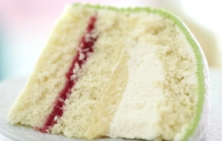Zum Vergrößern auf das Bild rechts klicken
Das Vergnügen beim Genuss einer schwedischen Prinzessintorte sind die
verschiedenen Füllungen aus Obst/Marmelade, Vanillepudding und Sahne,
welche durch einen lockeren Biskuitboden unterteilt sind. Auf dem Teller
kann jeder Gast nach Belieben die verschiedenen Elemente einzeln oder
zusammen genießen. Bei der Obstschicht verwende ich gerne Himbeeren
zusammen mit Himbeermarmelade. Das macht die Torte noch etwas
fruchtiger.
Für die Dekoration ist es wichig eine grüne Marzipandecke zu nutzen.
Marzipan in Originalfarbe schmeckt auch lecker, aber sieht nach Oma und
nicht nach Prinzessin aus.
Durch die grüne Farbe bekommt die Torte einen Frühlingscharakter, was
meiner Meinung nach wunderbar zum Geburtstag passt. Ich dekoriere
entweder mit Marzipanrosen aus den Resten der Decke oder mit fertigen
Deko-Elemente, die es im Backregal des Supermarkt zu kaufen gibt.
Geburstagskerzen passen auch prima auf die Torte.
Grüne Marzipandecken gibt es in jedem schwedischen Supermarkt. Also beim
nächsten Urlaub mitbringen (lassen).
Zutaten und Einkaufliste
Folgende Zutaten werden für Teig, Füllungen, Marzipandecke und Dekoration benötigt:
Für den Biskuitboden
| 4 | Eier |
| 4 EL | heißes Wasser |
| 100 g | Zucker |
| 1 Prise | Salz |
| 50 g | Speisestärke |
| 100 g | Mehl |
| 1 TL | Backpulver |
| 100 g | gemahlene Mandeln |
| 3 Tropf. | Bittermandelaroma |
Für die Füllung
| 250 g | Himbeeren |
| 4 EL | Himbeermarmelade |
| 1 Port. | selbst gekocher Vanillepudding |
| 200 g | Schlagsahne |
| 1 TL | echter Vanillezucker |
| 1 TL | Sahnesteif |
Für die Decke aus Marzipan
| Eine | fertige Marzipandecke oder |
| 300 g | Marzipanrohmasse |
| Tube | grüne Lebensmittelfarbe |
als Dekoration
| 2 EL | Puderzucker |
| 2 - 3 | Marzipanblumen |
Anleitung zum Backen einer Prinzessin Torte
Ich werde jetzt kurz beschreiben, wie diese Torte hergestellt wird. Auf Details wie Puddingkochen und Biskuitboden backen gehe ich in ein anderes Mal ein.
Als Vorbereitung wird ein Biskuitboden gebacken und Vanillepudding (eine Packung Puddingpulver für 500ml Milch) gekocht. Beides muss für ca. 1 Stunde abkühlen.
Der fertig gebackene Biskuitboden wird mit einem langen Messer
vorsichtig in drei Ebenen geschnitten. Dabei darf der unterste Boden
etwas stärker sein. Wichtig ist, die Schnitte schön gleichmäßig zu
machen. Sonst wird die Torte schief und das mag kein Prinzessin.
Jetzt kommt der spannende Part und ich empfehle schonmal ein Blick auf
die Bilderstrecke unten. Auf den ersten Boden kommt die
Himbeermarmelade, welche mit den frischen Himbeeren bedeckt wird. Das
ganz mit Pudding glatt streichen. Dabei darf in der Mitte ein Hügel
entstehen. So kommt die Halbkugelform der Torte zur Entfaltung.
Jetzt der mittlere Boden und dann Pudding unten und Sahne darüber. Außen
mit einem Kuchenmesser glatt streichen. Zum Schluss den dritten Boden
auf der Sahne platzieren. Hier wird es erfahrungsgemäß rutschig. Wer
sehr feste Sahne hat, kann das leichter zusammen bauen.
Als letzter Schritt wird eine grüne Marzipandecke über die Torte gelegt, ausgeschnitten und mit den Händen angeformt. Durch die an der Seite herausquellende Sahne, klebt die Marzipandecke fest.
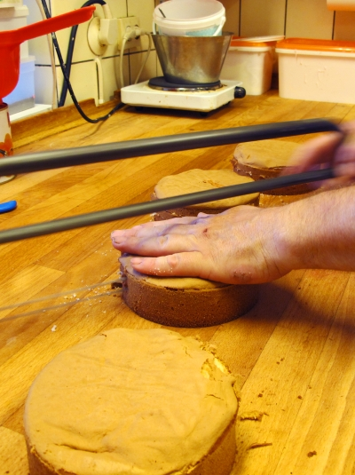 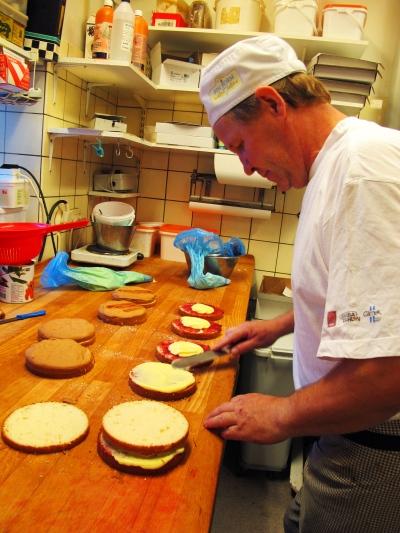 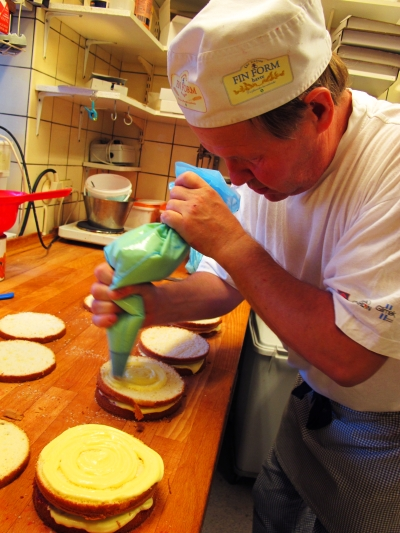 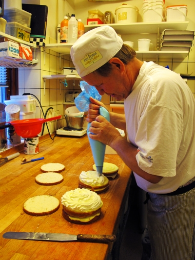 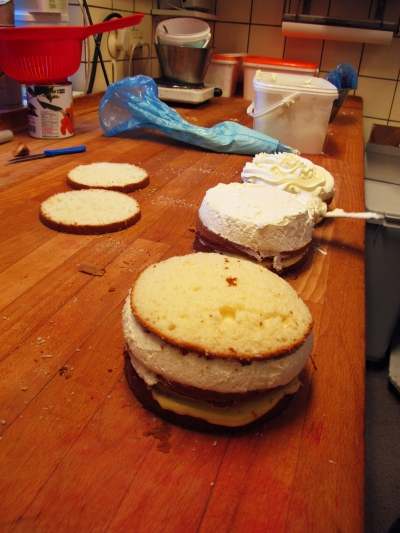 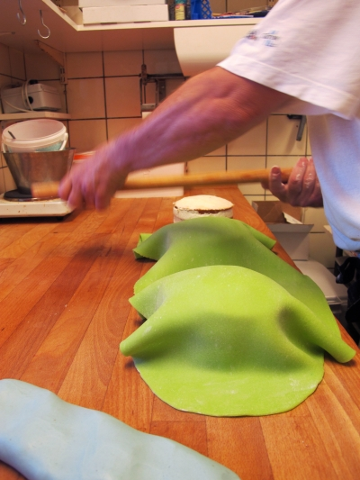 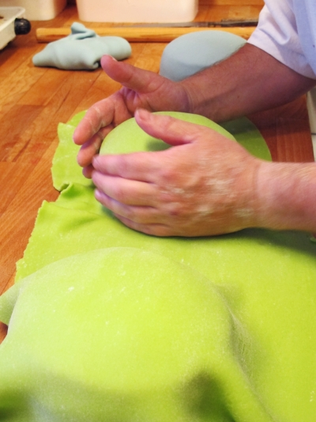 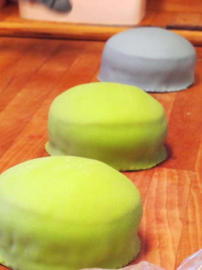 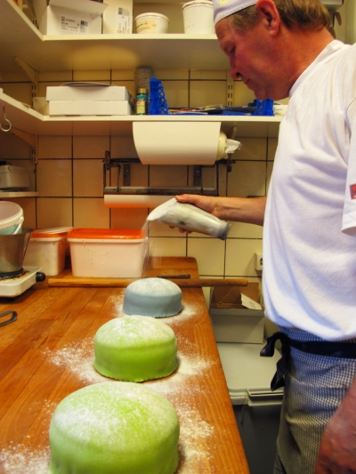 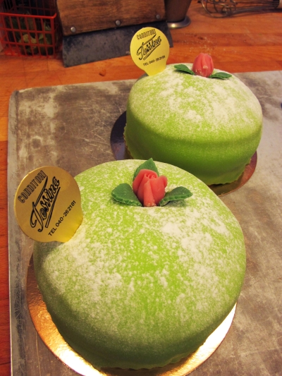Idee dieser Torte
Auszug aus dem Blog "Semi-Swede"
Jenny Åkerström wird als Urheberin des Rezeptes genannt. Åkerström war
zu Beginn des 20. Jahrhunderts ein schwedischer Hauswirtschaftsguru und
war sogar Ausbilderin der drei schwedischen Prinzessinnen Margaretha,
Märtha und Astrid, Töchter von Prinz Carl (Bruder von König Gustaf V.).
Sie veröffentlichte eine vierbändige Kochbuchreihe mit dem Titel
Prinsessornas Kokbok: Husmanskost och Helgdagsmat
(Prinzessinnen-Kochbuch: Hausmannskost und Ferienessen). Die erste
Ausgabe erschien 1929 mit den Porträts der Prinzessin auf dem Einband.
Mit ihrem großen Erfolg kamen bis 1952 achtzehn Nachdrucke mit
Überarbeitungen auf den Markt.
Ich konnte keine endgültigen Informationen darüber finden, warum die
Bücher die Prinzessinnen-Kochbücher genannt wurden oder warum die
Prinzessinnen damit einverstanden waren, ihre Bilder auf dem Einband zu
haben, außer der Tatsache, dass Jenny Åkerström ihre Lehrerin war und
die Prinzessinnen als Vorbilder angesehen wurden. Zu ihrer Ausbildung
gehörten Kinderbetreuung und Kochen, was zu jener Zeit innovativ war. In
einem feministischen Sinne hob die formale häusliche Ausbildung die
Professionalität hervor, die für die Leitung eines Hauses und der Kinder
erforderlich war. Vielleicht ist die "Hausprinzessin" die Vorläuferin
des heutigen hohen Status einer "Hausgöttin".
Da mir die
Ursachenforschung am Herzen liegt, konnte ich nicht widerstehen, ins
Internet zu gehen und eine erste Ausgabe der Prinsessornas Kokbok zu
finden. Jetzt bin ich stolzer Besitzer eines schönen, alten Kochbuchs
und kann definitiv berichten, dass die Originalausgabe kein Rezept für
einen Kuchen wie die heute so beliebte Prinsesstårta enthält. Deshalb
habe ich die Hilfe von hembakningsrådet (dem schwedischen Hausfrauenrat)
in Anspruch genommen, der Zugang zu mehreren Ausgaben der Prinsessornas
Kokboks hatte. Das Rezept erscheint nicht in den Ausgaben von 1937, 1945
oder 1952, aber es IST ein Rezept für Grön Tårta (grüner Kuchen) in der
Ausgabe von 1948, und hembakningsrådet bestätigte, dass es sich um das
Prinsesstårta-Rezept handelt, wie wir es heute kennen. Aus welchem Grund
auch immer wurde das Rezept aus der Ausgabe von 1952 gestrichen, aber
der Name Grön Tårta erklärt die grüne Farbe.
Was den Namen
prinsesstårta betrifft, so ist er sicherlich ansprechender als "grüner
Kuchen". Der offizielle schwedische Bäckerverband (Sveriges bagare och
konditorier) gibt an, dass der Kuchen den Namen prinsesstårta erhielt,
weil die Prinzessinnen den Kuchen so sehr liebten. Und sie waren nicht
allein. In Schweden und Finnland wurde die Torte schnell populär. Jedes
Jahr werden in Schweden rund 500.000 prinsesstårtas verkauft. Die dritte
Woche im September ist offiziell die prinsesstårta-Woche. Für jede in
diesem Zeitraum in Schweden gekaufte prinsesstårta werden 10SEK an den
Fonds der Kronprinzessin Victoria gespendet, der chronisch kranken und
behinderten Kindern und Jugendlichen in Schweden zugute kommt.
Prinsesstårtas, die mit einer Goldkrone gekrönt sind, sind Teil der
Spendenaktion.